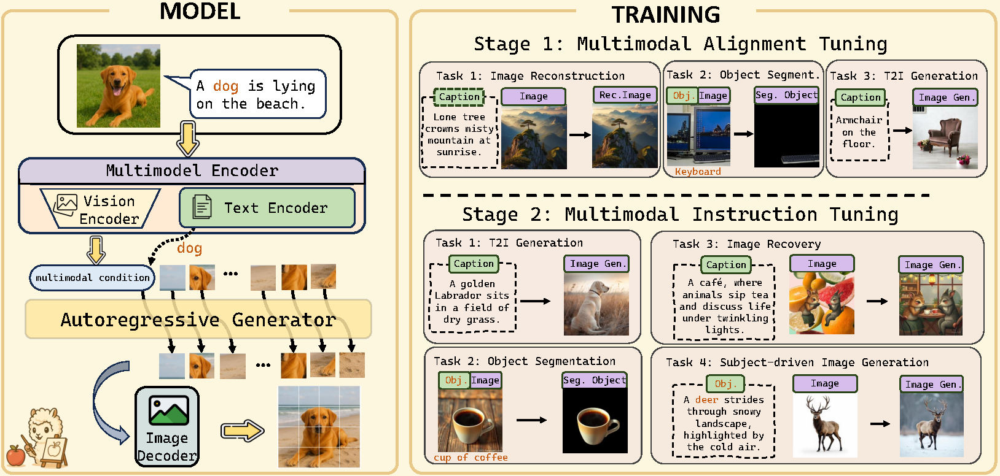
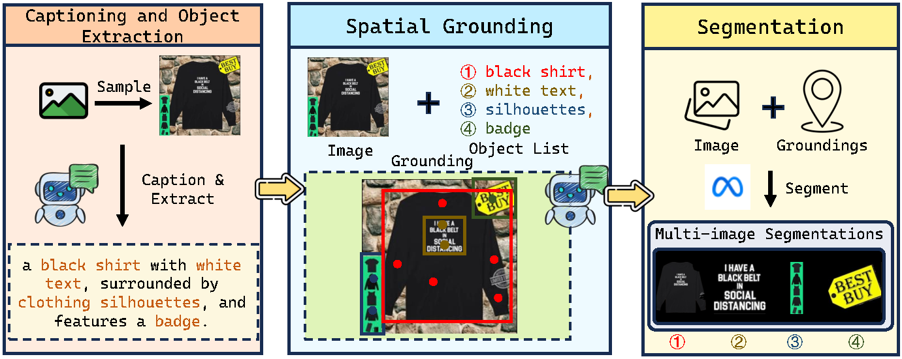

MENTOR, a lightweight autoregressive (AR) framework for controllable multimodal image generation. Unlike diffusion models that rely on stochastic sampling and heavy training, MENTOR leverages a unified transformer to directly align multimodal inputs with output image tokens, enabling precise, token-level control with significantly fewer resources.
Our two-stage training ensures balanced fusion across modalities and avoids over-reliance on either text or visual cues.
Code, data, and models available at: github.com/HaozheZhao/MENTOR
| Metric | Diffusion SOTA | MENTOR |
|---|---|---|
| CP·PF ↑ (DreamBench++) | 0.36 (Emu2) | 0.47 |
| Training data | 16‑200 M pairs | 3 M |
| GPU budget | 256 GPU × 3 days(Kosmos-G) | 8 GPU × 1.5 days |
| Image reconstruction ℓ2 ↓ | 0.206 (DreamEngine) | 0.101 |
Smaller is better for ℓ2; higher is better for CP·PF.
Token‑level control — deterministic AR decoding avoids stochastic diffusion noise, enabling precise layout & identity preservation.
Balanced multimodal fusion — two‑stage tuning prevents over‑reliance on either text or image, yielding the lowest CP/PF imbalance among baselines. fileciteturn1file4
Training‑friendly — 10× less data and fewer GPU hours than diffusion counterparts.

| Stage | Tasks | Objective |
|---|---|---|
| Stage 1 Alignment |
|
Enhance pixel and semantic alignment |
| Stage 2 Instruction Tuning |
|
Achieve robust and balanced multimodal integration |

We construct a large-scale multimodal dataset comprising approximately 3 million samples across all training tasks through an automated pipeline that combines state-of-the-art language-vision models with segmentation models. The dataset integrates:
On DreamBench++, MENTOR outperforms diffusion‑based baselines such as Emu2 and DreamEngine by ≈ 30% CP·PF while using a tenth of their training data.
| Method | T2I Model | Train Data | Concept Preservation (CP) | Prompt Following (PF) | CP·PF ↑ | CP/PF ↓ | |||||||
|---|---|---|---|---|---|---|---|---|---|---|---|---|---|
| Animal | Human | Object | Style | Overall | Photo. | Style. | Imag. | Overall | |||||
| Test-Time Tuning-Free Methods | |||||||||||||
| Unified-IO2 | Unified-IO2 | 8.5B | 0.77 | 0.80 | 0.64 | 0.82 | 0.72 | 0.24 | 0.18 | 0.11 | 0.19 | 0.14 | 3.79 |
| Lumina-mGPT | Chameleon | 10M | 0.95 | 0.97 | 0.89 | 0.85 | 0.91 | 0.31 | 0.25 | 0.15 | 0.25 | 0.23 | 3.64 |
| DreamEngine | SD3.5 | 21M | 0.76 | 0.72 | 0.61 | 0.73 | 0.68 | 0.44 | 0.37 | 0.25 | 0.37 | 0.26 | 1.84 |
| BLIP-Diffusion | SD v1.5 | 130M | 0.67 | 0.56 | 0.47 | 0.51 | 0.55 | 0.58 | 0.51 | 0.30 | 0.50 | 0.27 | 1.10 |
| Emu2 | SDXL v1.0 | 16M | 0.67 | 0.55 | 0.45 | 0.45 | 0.53 | 0.73 | 0.72 | 0.56 | 0.69 | 0.36 | 0.77 |
| IP-Adapter | SDXL v1.0 | 10M | 0.67 | 0.56 | 0.50 | 0.75 | 0.59 | 0.74 | 0.63 | 0.45 | 0.64 | 0.38 | 0.92 |
| MENTOR | LlamaGen | 3M | 0.65 | 0.36 | 0.57 | 0.47 | 0.55 | 0.86 | 0.85 | 0.80 | 0.84 | 0.47 | 0.65 |
| Method | COCO L2 ↓ | JourneyDB L2 ↓ |
|---|---|---|
| SeedTokenizer | 0.5102 | 0.5291 |
| SEED-X | 0.4317 | 0.4352 |
| EMU2-Gen | 0.3828 | 0.2869 |
| DreamEngine | 0.2065 | 0.2052 |
| MENTOR | 0.1008 | 0.0867 |
Lower is better. L2 distance measures pixel-level reconstruction error.
| Configuration | CP | PF | CP·PF |
|---|---|---|---|
| w/o Stage 1 Alignment | 0.179 | 0.673 | 0.120 |
| w/o Object Segmentation (Stage 1) | 0.252 | 0.479 | 0.121 |
| w/o Image Recovery | 0.661 | 0.284 | 0.188 |
| w/o Object Segmentation (Stage 2) | 0.412 | 0.918 | 0.378 |
| w/o Multimodal T2I Task | 0.407 | 0.910 | 0.370 |
| MENTOR (Full Model) | 0.555 | 0.839 | 0.466 |
MENTOR demonstrates broad adaptability across diverse multimodal generation tasks with minimal fine-tuning. Our framework's versatility stems from its unified autoregressive approach and robust two-stage training paradigm.
End-to-end object segmentation with high spatial precision, enabled by Stage 1 training.
Generate coherent outputs from multiple reference images, demonstrating multimodal alignment.
Adapt to unseen generation tasks from few multimodal examples, showing strong generalization.
📝 Key Insight: While achieving state-of-the-art performance in each specialized domain would require more targeted training and potentially more powerful components, these initial results underscore MENTOR's versatility and potential as an effective foundation for diverse multimodal conditional image generation applications.
If you find MENTOR useful, please cite:
@inproceedings{zhao2024mentor,
title={MENTOR: Efficient Multimodal-Conditioned Tuning for Autoregressive Vision Generation Models},
author={Zhao, Haozhe* and Cai, Zefan* and Si, Shuzheng and Chen, Liang and
Gu, Jiuxiang and Xiao, Wen and Hu, Junjie},
year={2024}
}